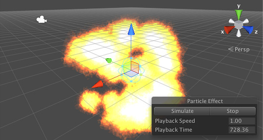

suppagam
I have started working with VFX in my game and, unfortunately, I have been hitting a couple of walls when it comes to particle systems in Urho. My particles always end up looking like the simple stuff in Unity:

Does anyone have any examples of more elaborate systems in Urho?
Kinda like this: https://www.youtube.com/watch?v=c1yxdUGRr_o